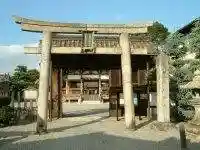
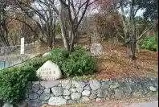
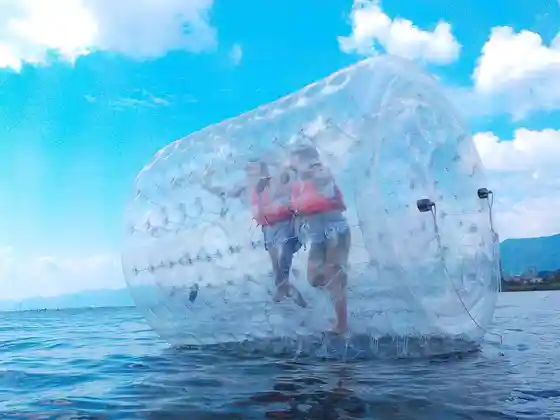
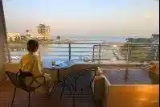

Wakamiya Hachiman Shrine
Otsu, Shiga · 077-522-3830 · Official / source link

Oji Yama Burial Mound
Otsu, Shiga · 077-521-2100 · Official / source link

O'PAL- Biwako no Oparu
Otsu, Shiga · Official / source link

Ogoto Onsen
Otsu, Shiga · 077-578-1650 · Official / source link

Enman In
Otsu, Shiga · 077-522-3690 · Official / source link
Wada Shrine
Otsu, Shiga · 077-522-3830 · Official / source link
Shiga Prefectural Art Museum
Otsu, Shiga · 077-543-2111 · Official / source link
Teuchi Soba Tsuruki
Otsu, Shiga · Official / source link
Shoju Raigo Tera
Otsu, Shiga · 077-578-0222 · Official / source link
Kangaku In Kyakuden Garden
Otsu, Shiga · 077-522-2238 · Official / source link
Biwako Gu Land Hotel
Otsu, Shiga · 077-579-2111 · Official / source link
Shigaken Maizo Bunkazai Center
Otsu, Shiga · Official / source link
R cafe
Otsu, Shiga · 077-596-1355 · Official / source link
Iwama Tera (Iwama Yama Shoboji)
Otsu, Shiga · 077-534-2412 · Official / source link
Nagara Shrine
Otsu, Shiga · 077-522-4411 · Official / source link
ASOBIWA HIRA BASE
Otsu, Shiga · 077-535-9165 · Official / source link
Otsu History Museum
Otsu, Shiga · 077-521-2100 · Official / source link
Kojo In Kyakuden Garden
Otsu, Shiga · 077-522-2238 · Official / source link
Omi Otsu Miya Nishikiori Iseki
Otsu, Shiga · 077-521-2100 · Official / source link
Imai Kanehira no Haka
Otsu, Shiga · 077-534-0706 · Official / source link
Ishiyamadera
Otsu, Shiga · 077-537-0013 · Official / source link
Shozui Tera
Otsu, Shiga · 077-572-2171 · Official / source link
Tatebe Taisha
Otsu, Shiga · 077-545-0038 · Official / source link
JR Ogoto Onsen'eki
Otsu, Shiga · Official / source link
Hotel Piaza Biwa Mizumi (Piaza Omi Nai)
Otsu, Shiga · Official / source link
Ami Tei
Otsu, Shiga · 077-537-1780 · Official / source link
Shogen Tera
Otsu, Shiga · 077-578-0205 · Official / source link
Kyo Nin Tera
Otsu, Shiga · 077-523-0897 · Official / source link
Hiyoshi Toshogu
Otsu, Shiga · 077-578-0009 · Official / source link
Toyotarentariisu Shiga Katata Ekimae Mise
Otsu, Shiga · 077-572-0800 · Official / source link
Otsu Betsuin
Otsu, Shiga · 077-522-3830 · Official / source link
Nango Onsen Futaba Ya
Otsu, Shiga · 077-537-1255 · Official / source link
Enman Inmon Ato
Otsu, Shiga · 077-522-3690 · Official / source link
Jigan Do
Otsu, Shiga · 077-578-0130 · Official / source link
Sato Bo Garden
Otsu, Shiga · 077-578-6565 · Official / source link
Yumoto Kan
Otsu, Shiga · 077-579-1111 · Official / source link
Hotel Biwa Reikuotsuka
Otsu, Shiga · 0120-084-205 · Official / source link
Horideafutanun
Otsu, Shiga · Official / source link
Hachi Kodo Sen Karada Jizo
Otsu, Shiga · 077-578-6565 · Official / source link
Sato Yu Mukashibanashi Oyama So
Otsu, Shiga · 077-578-1144 · Official / source link
Moriyasu Tera
Otsu, Shiga · 077-578-2002 · Official / source link
Roadside Station Biwa Mizumi Ohashi Kome Plaza
Otsu, Shiga · 077-572-0504 · Official / source link
Furendoshippuadobenchazu Friendship Adeventures
Otsu, Shiga · Official / source link
Chausuyama Burial Mound
Otsu, Shiga · 077-521-2100 · Official / source link
Jinushi Shrine
Otsu, Shiga · 077-599-2001 · Official / source link
Gesshin Tera
Otsu, Shiga · 077-524-3421 · Official / source link
Anraku Ritsu In
Otsu, Shiga · 077-578-0001 · Official / source link
Biwako Hana Funsui
Otsu, Shiga · 077-521-6016 · Official / source link
Fuyo Sono Honkan
Otsu, Shiga · Official / source link
Konna Rogaike
Otsu, Shiga · Official / source link
Yoshinaka Tera
Otsu, Shiga · 077-523-2811 · Official / source link
Ojigaoka Park
Otsu, Shiga · 077-527-1555 · Official / source link
Biwaichibaiku
Otsu, Shiga · 077-548-6572 · Official / source link
JR Katata Eki
Otsu, Shiga · Official / source link
Seta no Karahashi
Otsu, Shiga · Official / source link
Oishi Ryokuchi Supotsu Village
Otsu, Shiga · Official / source link
Otsu Minato (Kankosen no Riba)
Otsu, Shiga · 077-522-4115 · Official / source link
Hotel Burureku Otsu
Otsu, Shiga · 077-524-0200 · Official / source link
Hosaka no Kan Memorial Park
Otsu, Shiga · 077-528-2756 · Official / source link
Keihan Biwa Mizumi Hama Otsu Eki
Otsu, Shiga · Official / source link
Hieizan Doraibuei
Otsu, Shiga · Official / source link
Biwako Bunka Park
Otsu, Shiga · 077-543-2066 · Official / source link
Resutoran Vuyurutsuburuku
Otsu, Shiga · 077-526-3500 · Official / source link
Hirofumi Tenno Ryo
Otsu, Shiga · 077-521-2100 · Official / source link
Mizumi Zoku no Sato Museum
Otsu, Shiga · 077-574-1685 · Official / source link
Shiga Prefectural Budokan
Otsu, Shiga · 077-521-8311 · Official / source link
Hieizan Enryaku Tera
Otsu, Shiga · 077-578-0001 · Official / source link
Seta Gorufukosu
Otsu, Shiga · Official / source link
Mio Shrine
Otsu, Shiga · 077-522-3044 · Official / source link
Biwa Mizumi Otsu Purinsu Hotel
Otsu, Shiga · 077-521-1111 · Official / source link
Hoshi no Kansoku Shisetsu (Hira Genki Village)
Otsu, Shiga · 077-596-0710 · Official / source link
Wani City Tami Undo Plaza
Otsu, Shiga · Official / source link
Ono Takamura Shrine
Otsu, Shiga · Official / source link
TOYOTA SHARE SY Pakingu Ishiyama Eki Kitaguchi Chushajo
Otsu, Shiga · 0800-666-2077 · Official / source link
Ika Ritsu Park
Otsu, Shiga · Official / source link
(Seta Kawa Biwako Ribakuruzu)
Otsu, Shiga · 077-572-2114 · Official / source link
Otsu Jiken no Hi (Rokoku Kotaishi Sonan Chi no Hi)
Otsu, Shiga · 077-528-2772 · Official / source link
Tonan Tera
Otsu, Shiga · 077-578-0001 · Official / source link
TOYOTA SHARE Yumoto Kan Dai 2 Chushajo
Otsu, Shiga · 0800-666-2077 · Official / source link
Supa Resort Ogoto Agaryanse
Otsu, Shiga · 077-577-3715 · Official / source link
Fujio Magai Hotoke
Otsu, Shiga · 077-536-5090 · Official / source link
Wani Hama Suiei Ba
Otsu, Shiga · Official / source link
Otsu Kyu Otsu Public Hall
Otsu, Shiga · 077-522-8220 · Official / source link
Biwako Sosui
Otsu, Shiga · 077-522-3830 · Official / source link
JR Otsu Eki
Otsu, Shiga · Official / source link
Shiga Prefectural Gym
Otsu, Shiga · 077-524-0221 · Official / source link
JR Otsu Kyo Eki
Otsu, Shiga · Official / source link
Sakamoto Joshi Hi
Otsu, Shiga · 077-578-6565 · Official / source link
Nango Suisan Center
Otsu, Shiga · 077-546-1153 · Official / source link
Ryosha Shrine
Otsu, Shiga · Official / source link
Zeze Shrine
Otsu, Shiga · 077-522-3830 · Official / source link
Seta Castle Ruins
Otsu, Shiga · 077-534-0706 · Official / source link
Hiyoshi Taisha (Hiyoshi Baba)
Otsu, Shiga · Official / source link
Omatsu Saki
Otsu, Shiga · 077-528-2772 · Official / source link
Katata
Otsu, Shiga · 077-573-1000 · Official / source link
Nango Park
Otsu, Shiga · 077-545-2811 · Official / source link
Autodoasupotsu Club Oparu
Otsu, Shiga · Official / source link
Karasaki Shrine
Otsu, Shiga · 077-578-0009 · Official / source link
rcafe at marina
Otsu, Shiga · 077-571-6017 · Official / source link
Omi Maiko Ichigo Sono
Otsu, Shiga · 090-1155-1515 · Official / source link
Sakai Shrine
Otsu, Shiga · 077-578-0494 · Official / source link
Tesutosupotto
Otsu, Shiga · Official / source link
Mitsuhashi Setsuko Art Museum
Otsu, Shiga · 077-523-5101 · Official / source link
Sakamoto
Otsu, Shiga · 077-578-6565 · Official / source link
Mitsui Tera (Onjo Tera)
Otsu, Shiga · 077-522-2238 · Official / source link
Omi Ushi Senmonten Matsu Ki Ya Main Shop
Otsu, Shiga · 077-534-1211 · Official / source link
Tachigi Kannon
Otsu, Shiga · 077-537-0008 · Official / source link
Nogami Shrine (Nio to Naishi no Haka)
Otsu, Shiga · 077-573-1000 · Official / source link
Mizu no Megumi Kan Akua Biwa
Otsu, Shiga · 077-546-7348 · Official / source link
Nyu Biwako Hotel
Otsu, Shiga · 077-545-0101 · Official / source link
Zeze Castle Ruins Park
Otsu, Shiga · 077-527-1555 · Official / source link
Biwa Mizumi Kagai Michi
Otsu, Shiga · 077-578-1075 · Official / source link
Toyotarentariisu Shiga Zeze Mise
Otsu, Shiga · 077-511-3661 · Official / source link
Ono Tofu Shrine
Otsu, Shiga · Official / source link
Kinotsurayuki no Haka
Otsu, Shiga · Official / source link
Ogoto Onsen Rokkaku Ashiyu
Otsu, Shiga · 077-578-1650 · Official / source link
Otsu Minato Mariina
Otsu, Shiga · Official / source link
Nagisa Park (Otsu)
Otsu, Shiga · 077-527-1555 · Official / source link
Dan Tomoshibi Kan Kiku no Ya
Otsu, Shiga · 077-578-1281 · Official / source link
Kyutokaido
Otsu, Shiga · 077-522-3830 · Official / source link
Saikyo Tera
Otsu, Shiga · 077-578-0013 · Official / source link
Oji Yama Sogo Sports Park
Otsu, Shiga · Official / source link
Shiga Kiyoshi Hayashi no Hi
Otsu, Shiga · 077-592-0378 · Official / source link
Tomikawa Magai Hotoke (Mimi Dare Fudo)
Otsu, Shiga · 077-534-0706 · Official / source link
JR Zeze Eki
Otsu, Shiga · Official / source link
Seta Kawa Araizeki
Otsu, Shiga · Official / source link
Kyu Chikurin In
Otsu, Shiga · 077-578-0955 · Official / source link
Shiga Inmon Ato
Otsu, Shiga · 077-578-0130 · Official / source link
Nagara Park
Otsu, Shiga · 077-522-3830 · Official / source link
Matsu no Ura Suiei Ba
Otsu, Shiga · Official / source link
Biwako Rakuen Hotel Izutsu
Otsu, Shiga · 077-577-2235 · Official / source link
Mitsunori Tera
Otsu, Shiga · 077-572-1030 · Official / source link
Kinro Fukushi Center
Otsu, Shiga · Official / source link
Biwa Mizumi Barei / Biwa Mizumi Terasu
Otsu, Shiga · 077-592-1155 · Official / source link
Honpuku Tera
Otsu, Shiga · 077-572-0044 · Official / source link
Akechi Tsuka
Otsu, Shiga · 077-578-6565 · Official / source link
Guruttobiwa Mizumi Shima Meguri Otsu Minato (Biwakokisen)
Otsu, Shiga · Official / source link
Kan Semimaru Shrine
Otsu, Shiga · 077-522-6082 · Official / source link
Keihan Sakamoto Hieizan Kuchi Eki
Otsu, Shiga · Official / source link
Biwako Hotel
Otsu, Shiga · 077-524-7111 · Official / source link
Ogoto Onsen Kanko Park
Otsu, Shiga · 077-578-3750 · Official / source link
Shiga Prefectural Geijutsugekijo Biwa Mizumi Horu
Otsu, Shiga · Official / source link
Ebagureizu Biwako
Otsu, Shiga · 077-535-9202 · Official / source link
Genju Iori
Otsu, Shiga · Official / source link
Botoresu Biwako
Otsu, Shiga · Official / source link
Saku Na Do Shrine
Otsu, Shiga · 077-546-0079 · Official / source link
Hiyoshi Chaen
Otsu, Shiga · 077-578-6565 · Official / source link
Karahashi Yaki Kamamoto
Otsu, Shiga · 077-537-0543 · Official / source link
Dejima no Lighthouse
Otsu, Shiga · 077-573-1000 · Official / source link
Biwako Ryokusuitei
Otsu, Shiga · 077-577-2222 · Official / source link
Biwako Kuruzu (Otsu Minato) (Biwakokisen)
Otsu, Shiga · 077-524-5000 · Official / source link
Hieizan
Otsu, Shiga · Official / source link
JR Hieizan Sakamoto Eki
Otsu, Shiga · Official / source link
Omikami Yama Fudo Tera
Otsu, Shiga · 077-522-2238 · Official / source link
Yu Shrine
Otsu, Shiga · Official / source link
Tenno Shrine
Otsu, Shiga · 077-592-1121 · Official / source link
Osakayama Kan Shi
Otsu, Shiga · 077-522-3830 · Official / source link
Biwa Mizumi Otsu Kan (Yanagigasaki Kohan Park)
Otsu, Shiga · 077-511-4187 · Official / source link
Noriaki In (Fe no Rosa no Haka)
Otsu, Shiga · 077-522-2238 · Official / source link
Omi Maiko Suiei Ba
Otsu, Shiga · Official / source link
Ono Shrine
Otsu, Shiga · Official / source link
Sofuku Jiseki
Otsu, Shiga · 077-521-2100 · Official / source link
Garden Museum Hiei
Otsu, Shiga · 075-707-7733 · Official / source link
BSC Uotasupotsu Center
Otsu, Shiga · 077-592-0127 · Official / source link
Awazu no Seiran
Otsu, Shiga · Official / source link
Tenson Shrine
Otsu, Shiga · 077-522-3593 · Official / source link
Shiga Prefectural Aisuariina
Otsu, Shiga · 077-547-5566 · Official / source link
Fu Mido (Mangetsu Tera)
Otsu, Shiga · 077-572-0455 · Official / source link
Seta Haiji Ato
Otsu, Shiga · 077-521-2100 · Official / source link
JR Ishiyama Eki
Otsu, Shiga · Official / source link
Shiga no Great Buddha
Otsu, Shiga · 077-528-2772 · Official / source link
TOYOTA SHARE Hon Katata 4 Chome
Otsu, Shiga · 0800-666-2077 · Official / source link
Biwako Shuko Kahi
Otsu, Shiga · 077-528-2756 · Official / source link
Ryu Tsume Baika Kawa Nichi no Shutsu Kama
Otsu, Shiga · Official / source link
Tennen Gensen no Yado (Kotoyu)
Otsu, Shiga · 077-577-3160 · Official / source link
Yakuju In
Otsu, Shiga · 077-578-6565 · Official / source link
Taka Kannon Kinsho Tera
Otsu, Shiga · 077-522-3830 · Official / source link
Ogoto (Onsen) Minato (Kankosen no Riba)
Otsu, Shiga · Official / source link
Kanda Shrine
Otsu, Shiga · 077-573-1000 · Official / source link
Otsu Minato Chushajo
Otsu, Shiga · 075-221-8924 · Official / source link
Otsu Matsuri Hikiyama Tenjikan
Otsu, Shiga · 077-521-1013 · Official / source link
Hira Genki Village
Otsu, Shiga · 077-596-0710 · Official / source link
Kuzukawa Shinrin Kyanpu Village
Otsu, Shiga · 077-599-2156 · Official / source link
TOYOTA SHARE Toyotarentaka Zeze Mise
Otsu, Shiga · 0800-666-2077 · Official / source link
Kimihito Residence (Kyu Okamoto Tei)
Otsu, Shiga · 077-578-6455 · Official / source link
Shinotsu Shrine
Otsu, Shiga · 077-522-3830 · Official / source link
Mano Hama Suiei Ba
Otsu, Shiga · Official / source link
Ano Jizo
Otsu, Shiga · Official / source link
Tennen Onsen (Hira Topia)
Otsu, Shiga · 077-596-8388 · Official / source link
Kuzukawa Gorge
Otsu, Shiga · 077-599-2120 · Official / source link
Sakamoto Tourist Information
Otsu, Shiga · 077-578-6565 · Official / source link
Yakumogahara Marsh
Otsu, Shiga · Official / source link
Kuzukawa Iki Sho Myo In
Otsu, Shiga · 077-599-2372 · Official / source link
Kyo Omi
Otsu, Shiga · 077-577-2211 · Official / source link
Ki On Tera (Roka Asamizu So)
Otsu, Shiga · 077-522-2183 · Official / source link
Shiga Ariina
Otsu, Shiga · Official / source link
Mishigankuruzu Otsu Minato (Biwakokisen)
Otsu, Shiga · 077-524-5000 · Official / source link
Zeze Yaki Art Museum
Otsu, Shiga · 077-523-1118 · Official / source link
Sanno So Motomiya Hiyoshi Taisha
Otsu, Shiga · 077-578-0009 · Official / source link
Ryugaoka Haijin Bochi
Otsu, Shiga · 077-522-3830 · Official / source link
Kitakomatsu Suiei Ba
Otsu, Shiga · Official / source link
Sakamoto Ga Buru
Otsu, Shiga · 077-578-0531 · Official / source link
Izu Shrine
Otsu, Shiga · 077-573-1000 · Official / source link
Kyu Zeze Castle Town
Otsu, Shiga · 077-522-3830 · Official / source link
Otsu Castle Ruins
Otsu, Shiga · 077-522-3830 · Official / source link
Piaza Omi Prefectural Kenmin Koryu Center
Otsu, Shiga · 077-527-3315 · Official / source link
JR Omi Maiko Eki
Otsu, Shiga · Official / source link
Biwakotsurizumubesu
Otsu, Shiga · Official / source link
Hisashi Chosei no Sato
Otsu, Shiga · 077-546-3131 · Official / source link
Oku Hiei Doraibuei
Otsu, Shiga · Official / source link
Omi Jingu Tokeikan Takaramono Kan
Otsu, Shiga · 077-522-3725 · Official / source link
Omi Shrine
Otsu, Shiga · Official / source link
Otsu Science Museum
Otsu, Shiga · 077-522-1907 · Official / source link
Sumairu Hotel Otsu Seta
Otsu, Shiga · 077-543-2511 · Official / source link
Buruberiifiiruzu Kinokuniya
Otsu, Shiga · Official / source link
Otsu Yakusho
Otsu, Shiga · 077-523-1234 · Official / source link